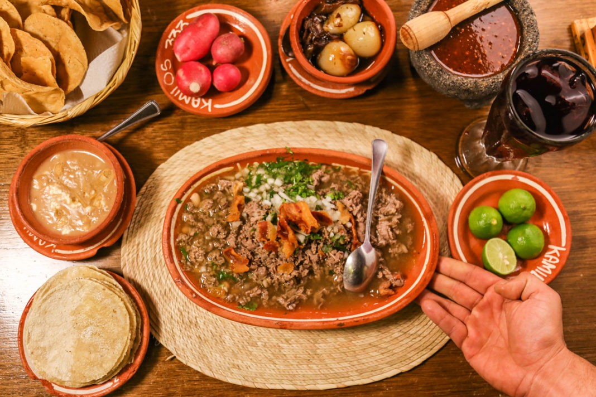

Carne en su Jugo

Description
Carne en su Jugo is a traditional dish from Guadalajara, Jalisco, known for its savory and comforting flavors. The name, which translates to "meat in its own juices," highlights the dish’s rich, beefy broth, which is infused with the flavors of bacon, beef, and fresh tomatoes. This dish combines small cubes of beef with crispy bacon, creating a deeply flavorful broth that is both hearty and satisfying. Often enjoyed as a main course, it reflects the bold and comforting nature of Jalisco’s regional cuisine.
The preparation of carne en su jugo involves simmering beef with bacon, onions, garlic, and a base of tomatoes, which forms a richly flavored soup. Pinto beans are sometimes added, lending additional texture and heartiness. Served with fresh cilantro, lime wedges, and sliced radishes, along with tortillas or corn chips, the dish allows for a customizable eating experience. Its robust flavors and satisfying texture make it a beloved comfort food in Guadalajara and beyond.
Ingredients
- Beef (typically flank steak or sirloin)
- Bacon
- Onion
- Garlic
- Tomatoes
- Jalapeño or Serrano Peppers
- Beef Broth
- Pinto Beans
- Cilantro
- Lime Wedges
- Radishes
- Tortillas or Corn Chips
Steps
- Cook the Bacon: In a large pot, cook the diced bacon over medium heat until it becomes crispy. Remove the bacon and set aside, leaving the rendered fat in the pot.
- Brown the Beef: Add the beef cubes to the pot with the bacon fat and cook until browned on all sides. Remove the beef and set aside.
- Sauté Aromatics: In the same pot, add chopped onions and minced garlic. Cook until the onions are translucent and fragrant.
- Prepare the Tomato Base: Add chopped tomatoes (or tomato sauce) and chopped jalapeño or serrano peppers to the pot. Cook for a few minutes until the tomatoes are softened.
- Combine Ingredients: Return the browned beef and cooked bacon to the pot. Add beef broth or water to cover the ingredients. Bring to a boil, then reduce to a simmer.
- Simmer: Let the mixture simmer for about 30 minutes or until the beef is tender and the flavors are well combined.
- Add Beans: If using pinto beans, add them to the pot and cook for an additional 10 minutes.
- Season: Adjust seasoning with salt and pepper to taste.
- Serve: Ladle the carne en su jugo into bowls. Garnish with chopped cilantro and serve with lime wedges, sliced radishes, and tortillas or corn chips on the side.
- Enjoy: Enjoy the rich, flavorful soup with all the garnishes and sides.